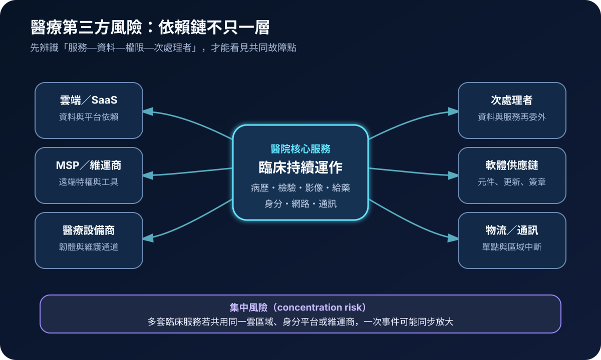
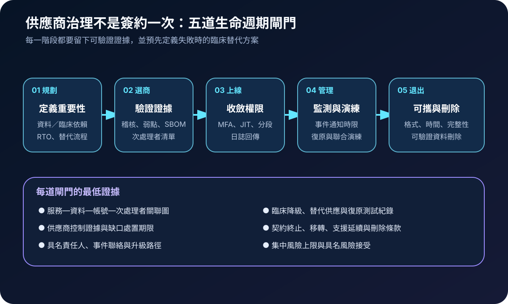
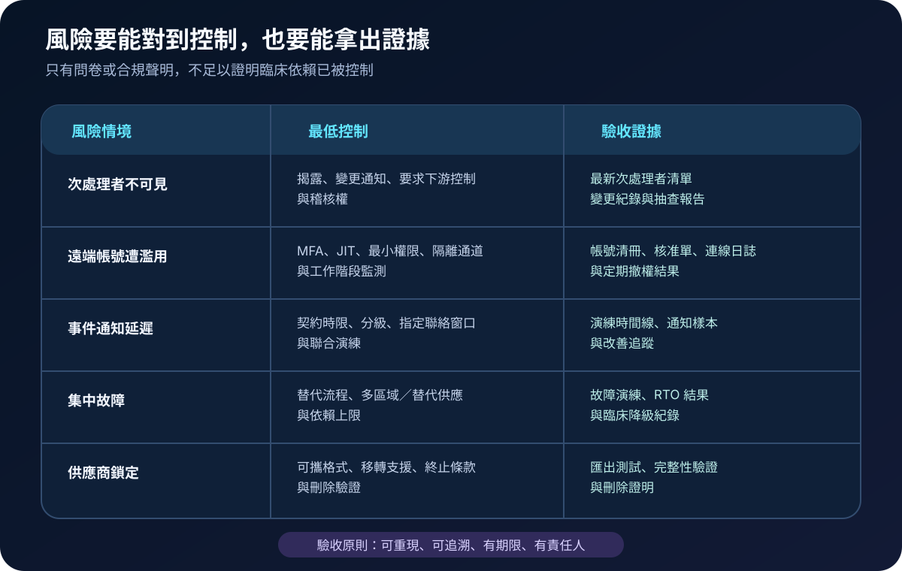

醫療資安國際觀察 · 2026-08-23
醫療第三方不是契約附件：從供應鏈依賴到可退出驗收
作者：Dr. William｜醫療資訊與資安治理實務工作者
醫院將雲端、維運、設備連線或資料處理交給供應商時，臨床責任並未一併外包。治理必須回答：服務依賴誰、供應商又委託誰、誰能進入系統、事件多久能共同處置，以及服務中止時能否安全移轉。
名詞解釋：第三方之外還有依賴鏈
MSP（Managed Service Provider）提供代管或維運服務；次處理者是受主要供應商再委託處理資料或服務的組織。軟體供應鏈涵蓋元件、建置、簽章、更新與散布流程。集中風險（concentration risk）是多項關鍵服務共同依賴同一平台、區域或供應商，造成單一事件同時放大。退出計畫則預先定義資料可攜、替代服務、移轉支援、存取撤除與可驗證刪除。
國際現況與適用邊界
ENISA 於 2026 年 7 月發布醫院與醫療提供者採購資安指引，將採購分為規劃、選商與管理，要求在生命週期中處理供應商資訊、下游委外、弱點、事件通知、維護、退出與資料刪除。該指引與 NIS2、歐盟醫材及資料法規框架對齊。NIST SP 800-161 Rev.1 則提供跨產業 C-SCRM（Cybersecurity Supply Chain Risk Management）方法，將供應鏈風險納入組織風險管理、策略、計畫、政策與產品／服務評估。
法域界線：ENISA 指引及 NIS2 相關義務服務於歐盟治理情境；NIST 文件是美國官方技術指引。兩者不能直接寫成台灣醫院的法定要求。台灣醫療機構可把其中的生命週期控制轉為採購、維運與驗收問題，實際義務仍依台灣法規、主管機關公告、院內政策與契約確認。
規劃：用臨床重要性決定治理深度
範圍應先涵蓋會中斷病歷、檢驗、影像、給藥、身分或院內通訊的服務。每項依賴至少記錄資料類型、介接、特權帳號、次處理者、服務位置、RTO／RPO、事件窗口、替代方式及終止條件。角色應包含臨床、資訊、資安、採購、法務、醫工、個資與營運持續負責人。驗收可追蹤高重要性供應商盤點率、次處理者揭露率、遠端帳號定期複核率、事件演練完成率、逾期改善項目及退出測試成功率。

實作：先完成一項關鍵服務的閉環
- 畫出依賴：把服務、資料、帳號、介接、供應商與次處理者連起來，標示臨床中斷後果。
- 驗證供應商：要求可核對的安全開發、弱點處理、日誌、備援、事件回應與下游管理證據，不以問卷自評代替驗收。
- 收斂存取：供應商連線採 MFA、具名帳號、JIT、最小權限、隔離管理通道及工作階段留存，維護結束即撤權。
- 聯合演練：演練供應商失聯、資料外洩、更新失敗及平台中斷，核對通知時間、臨床降級、證據保全與復原責任。
- 測試退出：實際匯出資料與組態，驗證格式、完整性、移轉時間、替代能力、帳號撤除及資料刪除證明。
風險：合規文件不能取代依賴驗證
常見失敗包括只管理第一層供應商、多人共用遠端帳號、契約未定義通知時限、所有關鍵服務集中在同一平台，以及從未測試資料匯出。若短期無法降低集中度，需記錄中斷情境、臨床替代流程、復原時限、風險接受者與改善到期日；沒有期限的例外會逐漸成為永久依賴。

可執行清單
- 高重要性服務是否能追到資料、權限、介接、次處理者與共同平台？
- 供應商遠端帳號是否具名、限時、採 MFA，且維護工作階段可追查？
- 契約是否定義事件分級、通知時限、證據提供、下游責任與聯合演練？
- 是否辨識多項臨床服務共用同一供應商、雲區域或身分平台的集中風險？
- 資料與組態是否曾完成可攜、移轉、替代運作、撤權及刪除驗證？
來源
- ENISA｜Procurement guidelines for the cybersecurity of hospitals and healthcare providers（發布：2026-07-22；查閱：2026-08-23）
- ENISA｜ENISA Threat Landscape 2025（發布：2025-10-01；修訂：2026-01-09；查閱：2026-08-23）
- NIST SP 800-161 Rev.1 Update 1｜Cybersecurity Supply Chain Risk Management Practices for Systems and Organizations（更新：2024-11-01；規劃註記：2025-12-02；查閱：2026-08-23）
內容說明
本文依健康台灣深耕計畫相關治理內容整理，並參考歐盟與美國官方供應鏈風險資料，提出台灣醫療機構可採用的規劃與驗收框架；不取代主管機關正式公告、法律意見、個別採購契約或院內風險評估。